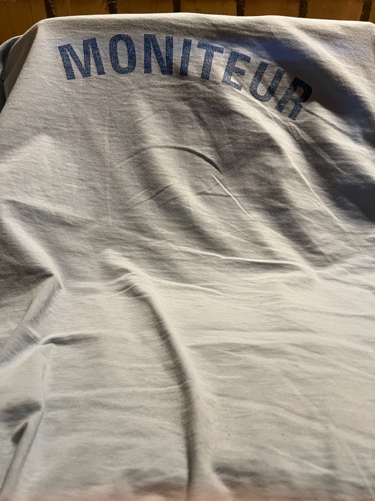
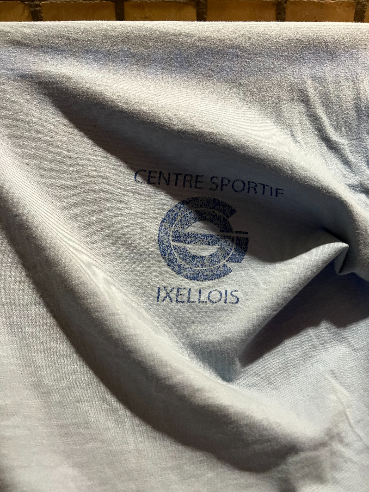

Dans le cadre d’un job étudiant, j’ai été animateur sportif à Ixelles pour les enfants.
Mon travail consistait à les occuper et à les encadrer pendant les vacances de Pâques tout en leur apprenant quelque chose.
J’ai eu des groupes de tous âges, allant des 3–4 ans jusqu’aux 15–16 ans.
Le plus difficile a été de bien m’adapter aux différents groupes afin de continuer à les encadrer sans pour autant les ennuyer.
Dans mon cas, je leur apprenais le football, ce qui n’a pas été facile avec les plus petits, qui ont tendance à se disperser.

